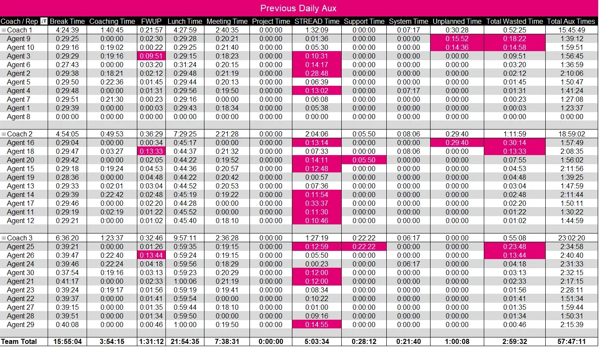
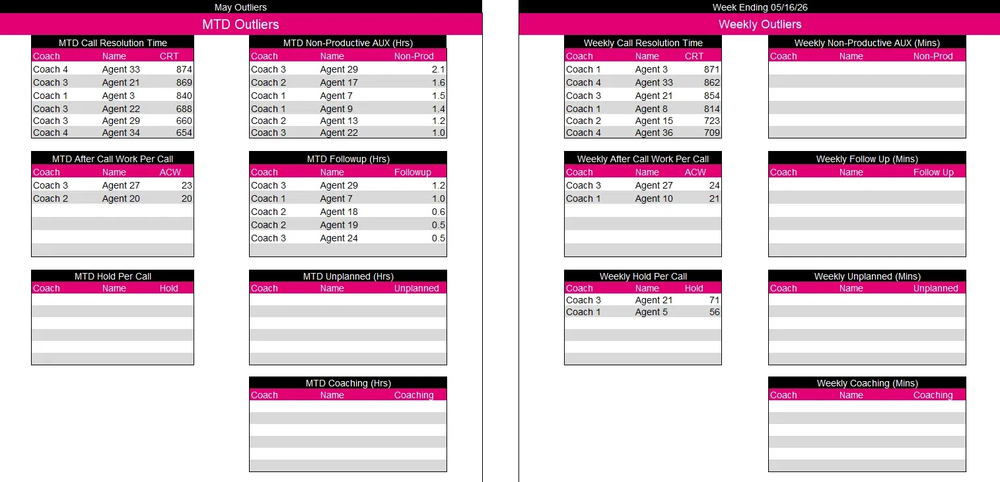
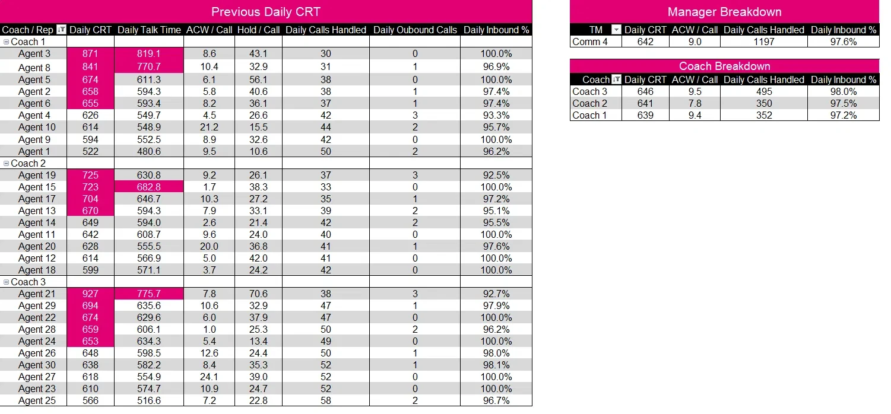
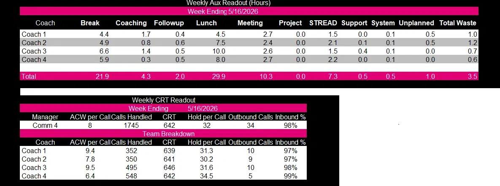

Case study
Replacing 60 hours a week of manual workforce reporting
A redesigned Excel workbook let one person send every leader at the site a daily report on how reps were using their offline time, in 5–10 minutes. Before, the same work took five analysts about 60 hours a week.
Staff time per week
~60 hours to ~1 hour
How often leaders got it
2–3× a week to Daily
Same day when needed
Time in use
About 4 years
Retired only when its data source was
The problem
Contact-center reps get offline time for things like coaching, training, and follow-up work away from the phones. This adherence report showed leaders whether each rep was using that time appropriately or abusing it, which matters a lot when call volume is heavy.
Each analyst on the Resource Planning team built the report by hand for their three or four assigned communities, spending four to five hours at a time, two to three days a week. Across the team, that was roughly 60 staff-hours every week. The finished report was also hard to read, so leaders struggled to spot the few people and time blocks that needed attention.
What I did
After working with the existing report as a frontline employee, I rebuilt it from the ground up on my own initiative and later shared it with Resource Planning.
- Mapped the manual steps the analysts repeated each time they built the report, and designed the workbook to remove them.
- Chose the freshest data source. I tested a Power Query connection to one data set, but it ran 1.5–2 days behind. Instead, the workbook used an internal reporting tool that had offline-time and handle-time data through the most recent half-hour interval.
- Cut the daily work to one step. Someone still pulled the data from that tool and appended it to the workbook by hand. From there, everything else refreshed automatically.
- Gave each community its own view, protected so leaders saw their own teams, plus a tailored daily email showing their standing and outliers.
- Added performance metrics later through Power Query, refreshed with Excel’s Refresh All, so leaders had offline time and performance in one place.
What leaders saw
These are rebuilt views of the workbook with made-up data and anonymized names. Highlighted cells flag outliers so leaders could see in seconds who needed a conversation.




The result
One person could update the workbook for the whole site and send every community its email in 5–10 minutes a day, about an hour a week in total. Leaders went from getting the report two or three times a week to getting it every day. Because the data ran through the last half hour, I sometimes pulled it during the day so people could see how they were doing before their shift ended. The workbook stayed in daily use for about four years, until mid-2025, when the internal tool it pulled from was retired.
What I took from it: the most convenient data source isn’t always the right one. A report that’s two days old answers yesterday’s question, so fresh data mattered more than an easy connection.
Visuals are rebuilt with made-up data and anonymized names, and no real T-Mobile data is shown. Figures in the text are approximate results.